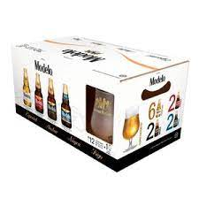

Cerveza Modelo Especial en presentación lata 12 pack 355 ml, una cerveza lager de estilo American Pilsner, clara, de color dorado intenso. Tiene un sabor un poco más fuerte y balanceado entre lo amargo y lo dulce, y un toque frutal, un poco más suave y fresco al final.
 Pack Modelo Variedad: 6 Modelo Especial + 2 Modelo Trigo + 2 Modeo Ámbar + 2 Negra Modelo + 1 Copa
Cerveza Modelo Especial en presentación lata 12 pack 355 ml, una cerveza lager de estilo American Pilsner, clara, de color dorado intenso. Tiene un sabor un poco más fuerte y balanceado entre lo amargo y lo dulce, y un toque frutal, un poco más suave y fresco al final.
Cerveza Modelo especial pack con 24 latas de 473 ml c/uTODO CON MEDIDAPROHIBIDA LA VENTA A MENORES DE 18 AÑOS.